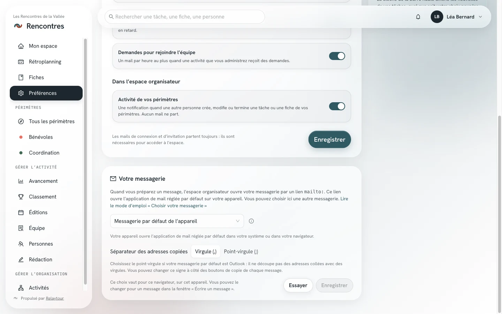
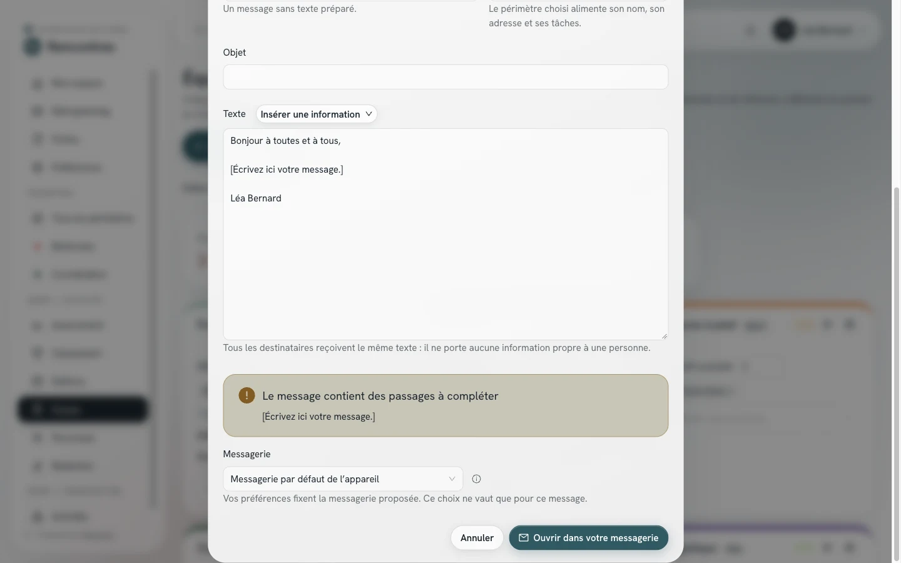

Vous préparez un message dans Relaytour, puis vous l'envoyez depuis votre propre messagerie. Ce mode d'emploi explique comment Relaytour ouvre cette messagerie, et comment vous choisissez celle qui s'ouvre.
Ce mode d'emploi complète la section « Messages à votre équipe » du mode d'emploi des admins d'activité. Il s'adresse aux admins, qui sont les seules personnes à écrire un message.
Point de départ
Comment Relaytour ouvre votre messagerie
Relaytour n'envoie aucun message. Il ouvre votre messagerie par un lien mailto:, qui porte les destinataires, l'objet et le texte. Votre appareil décide seul de l'application qui répond à ce lien : c'est son application de mail par défaut.
Une page web ne peut pas désigner une autre application que celle-ci. Relaytour vous propose donc deux autres moyens : ouvrir une messagerie en ligne dans un nouvel onglet, ou ouvrir une application par un lien qui lui est propre.
Huit choix
Les messageries proposées
Les messageries en ligne s'ouvrent dans un nouvel onglet, avec le compte déjà connecté dans votre navigateur. Si vous utilisez plusieurs comptes, vérifiez l'expéditeur avant d'envoyer.
Choix
Ce qui s'ouvre
Appareils
Champs Cc et Cci
Messagerie par défaut de l'appareil
L'application de mail par défaut de votre système, ou la messagerie en ligne que votre navigateur associe aux liens mailto:.
Tous
Repris
Gmail
Un nouveau message dans Gmail, dans un nouvel onglet.
Tous, dans un navigateur
Repris
Outlook (compte professionnel ou associatif)
Un nouveau message dans Outlook sur le web (Microsoft 365), dans un nouvel onglet.
Tous, dans un navigateur
Repris
Outlook.com (compte personnel)
Un nouveau message dans Outlook.com, dans un nouvel onglet.
Tous, dans un navigateur
À vérifier
Yahoo Mail
Un nouveau message dans Yahoo Mail, dans un nouvel onglet.
Tous, dans un navigateur
À vérifier
Proton Mail
Un nouveau message dans Proton Mail, dans un nouvel onglet.
Tous, dans un navigateur
Repris
Application Gmail
L'application Gmail installée sur l'appareil.
iPhone et iPad seulement
À vérifier
Application Outlook
L'application Outlook installée sur l'appareil.
iPhone, iPad et Android, ni Mac ni Windows
À vérifier
« À vérifier » signifie que l'éditeur de la messagerie ne documente pas ce champ. Relaytour le transmet, et la messagerie peut l'ignorer. La fenêtre « Écrire un message » vous le rappelle, et vous propose de copier les adresses.
Une messagerie qui ignore le champ Cci n'expose aucune adresse : le message s'ouvre sans ces destinataires, et vous les collez vous-même dans le champ Cci.
Deux endroits
Régler votre choix
Dans vos préférences
/<activité>/preferences
Le panneau « Votre messagerie » fixe la messagerie que Relaytour vous propose pour chaque message. Votre navigateur garde ce choix : il vaut pour ce navigateur, sur cet appareil. Vous pouvez ainsi choisir une application sur votre téléphone et une messagerie en ligne sur votre ordinateur.
MessagerieChoisir l'une des huit messageries. Une icône d'information accompagne la messagerie par défaut, et une icône d'avertissement accompagne les applications. Le bouton placé à droite du champ ouvre l'explication du choix affiché.
Séparateur des adresses copiéesChoisir la virgule ou le point-virgule, pour la messagerie par défaut de l'appareil. Choisissez le point-virgule si cette messagerie est Outlook.
EssayerOuvrir un message d'essai, adressé à vous seul·e. Votre adresse y figure dans les champs « À » et « Cci ». Vous fermez ce message sans l'envoyer.
Oui, le message s'est ouvertConfirmer l'essai. Relaytour ne peut pas savoir seul si une application a répondu : votre réponse fait foi.
EnregistrerGarder ce choix. Pour une application, le bouton reste inactif tant que vous n'avez pas confirmé un essai.

Le panneau « Votre messagerie », sur l'organisation d'exemple.
Pendant l'essai d'une application, Relaytour observe si votre navigateur quitte la page. Si rien ne se passe, un avertissement vous indique que l'application ne semble pas installée.
Pour un seul message
Fenêtre « Écrire un message »
Le champ « Messagerie », en bas de la fenêtre, reprend le choix de vos préférences. Vous pouvez en choisir une autre pour ce message. Ce changement ne modifie pas vos préférences.

Le champ « Messagerie » de la fenêtre, sur l'organisation d'exemple. Les personnes sont fictives.
Un message rouvert depuis l'onglet « Messages » s'ouvre dans la messagerie de vos préférences.
Messagerie par défaut
Changer la messagerie par défaut de votre appareil
Le choix « Messagerie par défaut de l'appareil » ouvre l'application que votre système associe aux liens mailto:. Si une application que vous n'utilisez pas s'ouvre, changez ce réglage dans votre système. Les libellés ci-dessous varient un peu d'une version à l'autre.
Mac
macOS
1Ouvrir l'application Mail, même si vous ne l'utilisez pas.
2Ouvrir le menu « Mail », puis « Réglages », puis l'onglet « Général ».
3Choisir votre application dans « Logiciel de messagerie par défaut » : Outlook, Thunderbird ou une autre application installée.
PC
Windows 10 et 11
1Ouvrir « Paramètres », puis « Applications », puis « Applications par défaut ».
2Saisir « mailto » dans le champ de recherche par type de lien.
3Choisir votre application de mail dans la liste proposée.
iPhone et iPad
iOS et iPadOS
1Ouvrir « Réglages », puis « Apps », puis « Apps par défaut ».
2Ouvrir « E-mail », puis choisir votre application.
Sur une version plus ancienne du système, ce réglage se trouve dans « Réglages », à la ligne de votre application de mail, sous « App de messagerie par défaut ».
Téléphone et tablette Android
Android
Android vous demande quelle application ouvrir la première fois que vous suivez un lien de mail. Vous choisissez votre application, puis « Toujours ».
ChangerOuvrir « Paramètres », puis « Applications », puis l'application qui s'ouvre aujourd'hui. Ouvrir « Ouvrir par défaut », puis effacer les valeurs par défaut. Android vous repose la question au prochain message.
Ordinateur sous Linux
GNOME
1Ouvrir « Paramètres », puis « Applications par défaut ».
2Choisir votre application à la ligne « Messagerie ».
Une messagerie en ligne par défaut
Chrome, Edge, Firefox
Votre navigateur peut confier les liens mailto: à une messagerie en ligne. Le choix « Messagerie par défaut de l'appareil » ouvre alors cette messagerie, avec tous les champs du message.
Chrome et EdgeOuvrir votre messagerie en ligne. Cliquer l'icône en forme de double losange, à droite de la barre d'adresse, puis « Autoriser ». Le réglage se retrouve dans les paramètres du navigateur, à la rubrique des gestionnaires de protocoles.
FirefoxOuvrir « Paramètres », puis « Général », puis « Applications ». Chercher « mailto », puis choisir votre messagerie dans la colonne « Action ».
SafariSafari ne confie pas les liens de mail à une messagerie en ligne. Choisissez la messagerie en ligne dans vos préférences Relaytour.
À essayer
Les applications Gmail et Outlook
Les choix « Application Gmail » et « Application Outlook » ouvrent l'application par un lien qui lui est propre. Google et Microsoft ne documentent pas ces liens, et leur comportement peut changer avec une mise à jour.
Selon l'appareil
L'application Gmail ne répond que sur iPhone et iPad. L'application Outlook répond sur iPhone, iPad et Android. Sur Mac, elle s'ouvre et refuse le lien. Sur Windows, elle ne s'ouvre pas.
Selon le champ
Le destinataire, l'objet et le texte sont repris. Les champs Cc et Cci ne sont pas garantis : relisez-les dans le message avant d'envoyer.
Sans application
Si l'application n'est pas installée, le navigateur ne fait rien ou affiche une erreur. Revenez alors à la messagerie par défaut ou à une messagerie en ligne.
Outlook sur ordinateur
Pour ouvrir vos messages dans Outlook sur Mac ou sur Windows, réglez Outlook comme messagerie par défaut de votre système, puis gardez le choix « Messagerie par défaut de l'appareil ».
Pour ces raisons, vos préférences n'enregistrent une application qu'après un essai confirmé sur l'appareil.
En dernier recours
Si rien ne s'ouvre
La fenêtre « Écrire un message » propose toujours de copier les adresses, l'objet et le texte. Vous ouvrez votre messagerie vous-même, puis vous collez chaque partie dans un nouveau message.
Les adresses copiées sont séparées par une virgule, ou par un point-virgule pour Outlook, qui ne découpe pas une liste collée avec des virgules. Le choix « Séparateur des adresses », sous les boutons de copie, change ce signe pour le message en cours.
Un texte très long ou de très nombreux destinataires dépassent ce qu'un lien peut porter, quelle que soit la messagerie. La fenêtre vous demande alors de copier le texte, ou les adresses.